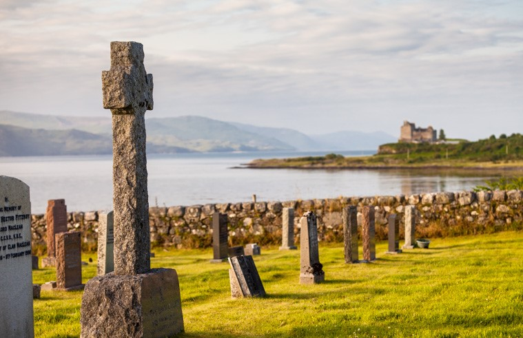
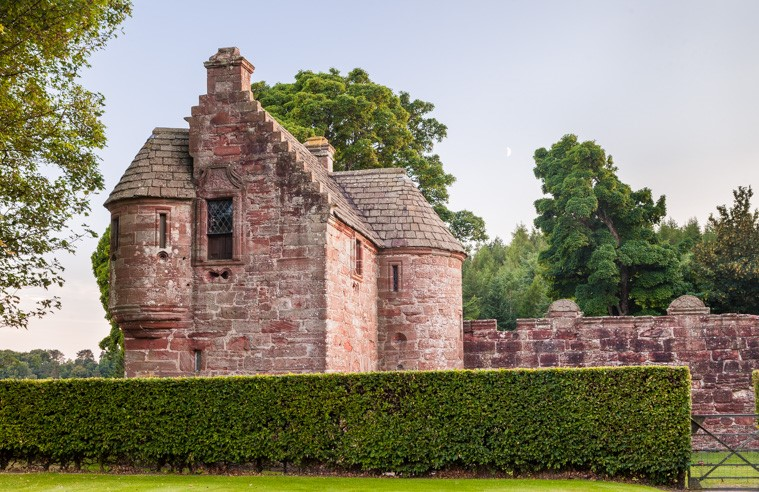
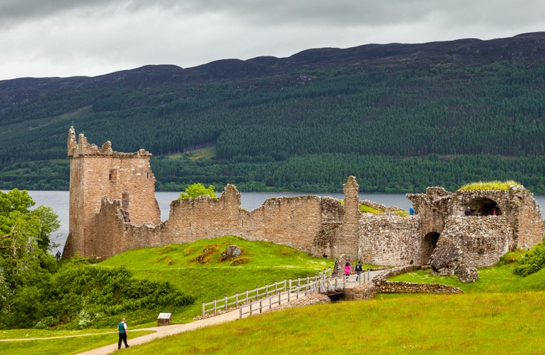
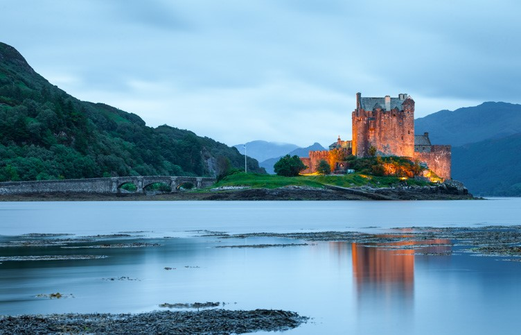

4 – Duart Castle (Isle of Mull)

En lo alto del acantilado, vigilando el mar, esta fortaleza nos dará la bienvenida al arribar a la isla de Mull, una de esas joyas desconocidas de Escocia. Sus orígenes se remontan al siglo XIII, cuando lo construyó el clan MacLean, pero tras múltiples batallas el clan Campbell se apoderó de él y lo demolió, no siendo hasta 1912 que los MacLean recuperaron nuevamente la posesión de las tierras, y reconstruyeron el castillo Duart como mejor pudieron.
3 – Edzell Castle

¡Aquí viven pavos reales! Podría contar que es del siglo XVI, que es de un color rosáceo, que su jardín amurallado es una fiel reconstrucción del que había en 1610 y tiene varios símbolos esotéricos, que en rara ocasión sus murallas vieron alguna batalla, y que más que un castillo era una casa de campo en medio de la campiña escocesa, pero lo más importante es que ¡aquí viven pavos reales!
2 – Urquhart Castle

En medio del célebre lago Ness (Loch Ness) nos encontramos con uno de los castillos más emblemáticos, más grandes y más visitados de Escocia, el castillo de Urquhart. Fundado en el siglo XIII, jugó un importante papel en la guerra de independencia escocesa (la de William Wallace), y aunque actualmente se encuentra en ruinas, se puede visitar muy cómodamente, además de contar con gran cantidad de información para el visitante.
1 – Eilean Donnan Castle

El castillo más famoso de Escocia y el líder indiscutible en cualquier top, pero no en éste. ¿Porqué? Pues simplemente porque es una burda reconstrucción de principios del siglo XX. Desde fuera es muy bonito, su emplazamiento en su propia isla es de película (unas cuantas fueron rodadas aquí, como Los Inmortales), pero al visitarlo por dentro parece que estamos en la casa de la abuelita, más que en un ancestral castillo escocés en el que se han librado cientos de batallas.